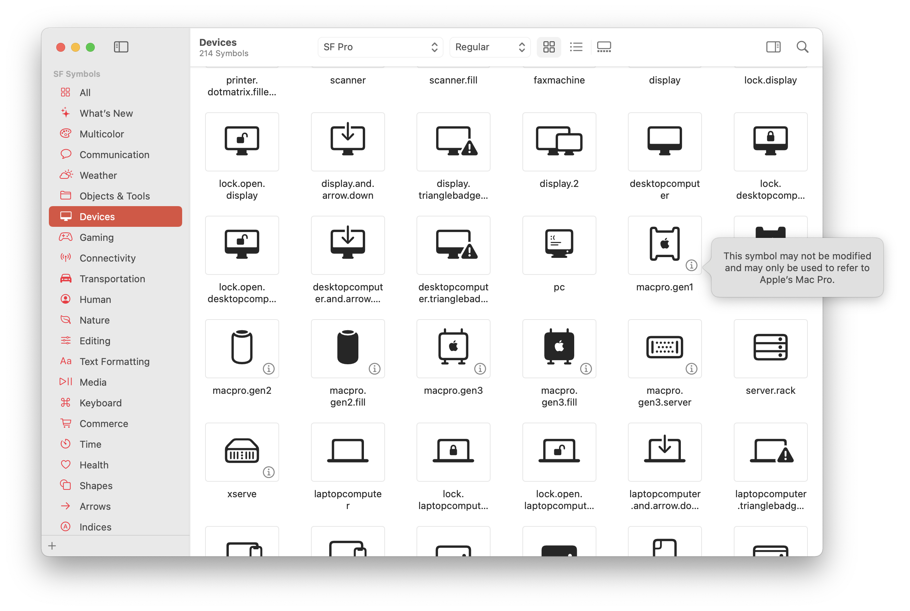

每日一句｜may
SF Symbols（SF 符号）是苹果整的一个设计资源参考库，里面包含了 app 里能用的符号。有的符号右下角会有一个 i，表明有进一步信息，点开之后，上面是这么一句话：

此符号可能无法修改且可能仅可用于指代 Apple 的 XXXXX。
这句话是我去年无意间发现的。当时读来读去，怎么读怎么别扭。什么叫「可能无法修改」？意思是其实还能修改？什么叫「可能仅可用于」？意思是不用于苹果规定的用途也行？如果是这样，那这句话放在这里又有什么意义呢？配上这句话的，都是苹果自家的产品或功能，按逻辑和苹果的调性，这些符号肯定不能拿来干别的，和「可能」这个词完全冲突。
除了意思上讲不通，这句话的行文也非常别扭。「可能仅可用于」一句，两个「可」重复而多余，且也前后矛盾：前一个「可」表明有选择的余地，紧跟着的「仅」就直接杜绝了这种余地。
要想知道这句话到底啥意思，还得去看英文原文是什么。改了语言一看：

This symbol may not be modified and may only be used to refer to Apple’s XXXXX.
那这就很明显了：所有的「可能」对应的都是 may 这个词，而 may 偏偏有一个翻译新手常翻的错误，也就是「望文生义」。查《元照》：
法律上常用助动词，通常表示可以作为，可以任选其一，而非强制性的必须作为；但有时也可作「须」〔must〕或「应」〔shall〕解，一般涉及公职人员责任时，可有此含义，但必须根据上下文全面理解。
另见《法律英语：中英双语法律文书制作》；这也是我研究生期间的一本应读书：
第二，当否定语和情态动词一起使用的时候，存在着和否定语有关的施为性作用问题。举个例子来说，禁止性的语言「may not」所指示的是取消许可。以一个评论者的眼光来看，如果你考虑到法律自身的施为性作用，「不得（may not）)」要比否定式的命令「不得（shall not）」更为合适。
两相结合，也就是读书时老师一定会讲到的「不是『可以不』，而是『不可以』」。结合之前的分析，苹果之所以写这么一句话，为的就是明示用户，这些符号不许改、不许挪作他用。由此，可以对原译文稍作改动：
T1：此符号可能无法修改且可能仅可用于指代 Apple 的 XXXXX。
T2：此符号不得修改，且仅可用于指代 Apple 的 XXXXX。
欢迎将您的想法、评论、意见、建议发送至 harveyjanson@icloud.com，请注明「讨论」字样，我会尽量回复。